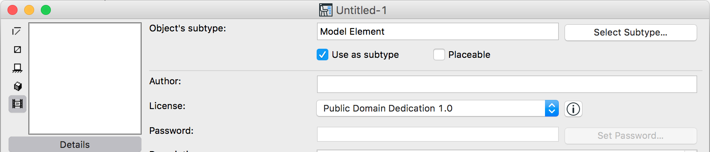
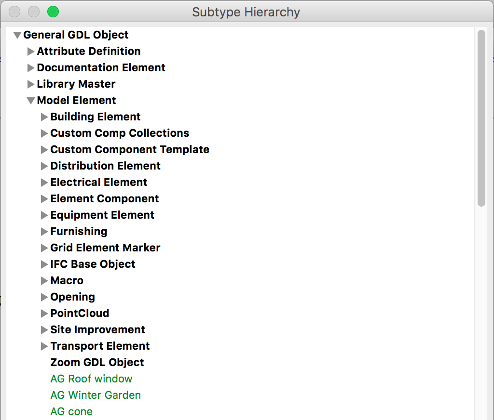

How to create a template library part to be used in my add-on?
-
Create a new library part in Archicad, and insert it into the correct place in the subtype hierarchy with the Select Subtype button: (in this example I shall insert the object as the subtype of Model Element). Also check the 'Use as subtype' checkbox.

Then save this object as, let's say "Zoom GDL Object". You can check whether this has been inserted into the object hierarchy correctly if you bring up the File / GDL Object / Open Object by Subtype... dialog.

-
Add this 'Zoom GDL Object' to your Add-On in a FILE resource:
'FILE' 132 "Zoom Object.gsm" { "Zoom GDL Object.gsm" }The name of the resource ("Zoom Object.gsm") will appear in the Object Settings dialog, and the content of the resource refers to name of the file ("Zoom GDL Object.gsm") you would like to include in your add-on.
-
Call
ACAPI_Register_BuiltInLibraryfrom yourRegisterInterface ()function. -
If you want to create a new object whose parent is this object in the subtype hierarchy, then before calling
ACAPI_LibPart_Createfill in theparentUnIDfield of theAPI_LibPartstructure this way:ACAPI_Goodies (APIAny_GetBuiltInLibpartUnIdID, (void*)(Int32) 132, libPart.parentUnID); // 132 is the 'FILE' resource ID -
Set the
placeable, and clear thetemplatefield of theAPI_LibPartstructure. -
After this you can call
ACAPI_LibPart_Create, and the library part will be inserted into the correct place in the subtype hierarchy.